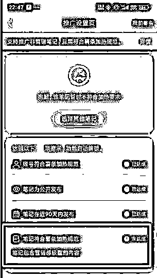

来源：https://o7nsrridj4.feishu.cn/docx/C8kJdZv2qoMrSrx2Eb8ch3UtnIb
各位圈友大家好，我是更绪，互联网最潇洒的00后，生财有术特级传术师，
目前在成都这边创业，团队主要围绕小红书这个平台，从事小红书电商、小红书线上获客、小红书本地生活相关、小红书品牌营销等业务，
众所周知，小红书从3月份开始，出台了一系列政策去限制从业者，其中很多是没有道理的，这里不作评价，对电商、获客、投放都有不小的影响，
今天主要来总结一下自己团队在实操过程中遇到的违规，拆解一下平台这样做的原因，并给出我们目前的解决方案，也算是给各位读者和精神股东做个阶段性汇报，
抛砖引玉，希望能在评论区和各位进行多挖一些有价值的东西出来，
这个现象大概是今年4月份开始频繁出现的，长下面这个样子，
说实话，这个不能尬黑小红书，因为在这个时间段很多平台都出现了类似的情况，个人推测，应该和清朗行动多少沾点关系，
也有人分析说，这应该是小红书正规化的体现，逐渐发展成像抖音那个样子，抖音跳人脸识别，很多年前就有了，
这个分析是很有道理的，互联网平台的运营逻辑确实是不断模仿、迭代，但是小红书平台例外，据我对小红书团队的了解，他们根本不可能有这个执行力，所有政策的落实都是一阵一阵的，大胆预言，这种现象不会持续太长时间，现在怎么解决跳人脸识别的问题？
如果已经跳了，
我们公司的策略就是，如果是值钱的号，比如说做小红书电商的主理人账号，就找家人朋友去帮忙人脸一下，实在不行就买实名，30-60这个价位，如果是引流的号，不值钱的，直接换新号，无需纠结，
如果还没跳，
从运营动作来讲，目前最容易出现跳人脸的时候，就是在短时间频繁进行了某个操作的时候，比如说短时间内，频繁评论、私信、发笔记，都很容易触发跳人脸识别，当然，并不代表其它情况下不会跳人脸，只是在我们的实操过程中，往往在短时间进行了某个频繁操作的时候，最容易跳人脸，尽量减少这种行为，
做过小红书的都知道，笔记投不了薯条，那就是白发了，一点流量拿不到，
小红书最近把投不了薯条玩出了新花样，尤其是做小红书电商的家人应该有所体会，最近新出了一个投不了薯条的理由——“营销感太重”，

这种违规真的让人难以理解，
如何解决？
根据我们实操下来，一般问题主要出现在文案/脚本当中，比如说，不能直接引导用户去拍笔记下方的商品链接（我真的很无语），
反正就是想尽办法——在笔记内容当中掩盖我们想赚钱的欲望😥，让小红书感觉我们是在真诚分享，而不是带着卖货的目的来的，
此外，小红书笔记最近投不了薯条的概率明显提升，
5月25日当天，我至少收到10位战友的私信，告诉我这两天发布的笔记，大多数投不了薯条，
排查了一圈发现，大多数原因还是出在文案当中，基本上都是多少有点违反广告法的感觉了，之前小红书不严格的时候这些话术没事情，现在不行了，
如何解决？
从文案/脚本逐句排查，删除掉你认为可能存在问题的地方，
比如说有位朋友卖K12暑假复习的资料，文案中出现了“弯道超车”这四个字，我当时就感觉有问题，删掉了这句话就好了，
实在懒得排查，就把文案删完，或者只留很少的几句话，也是一种策略，毕竟言多必失，
不谈专门做引流的账号，很多做小红书虚拟电商的战友，偶尔一次遇到有客户私信要求加微信发送网盘链接，
有些时候，心里想着偶尔发一次，应该没什么影响，心里没有防备，就把微信发了过去，
几天后，甚至好几周后，突然收到违规提升，账号被封禁，回忆了很久才想起来自己很久之前真的干过，自己理亏，申诉也没用！
轻则被限流一周，重则被封永久，这里再提醒一下各位，如果开店卖东西就老老实实卖，不要想着偶尔留一次微信没事，号没了就老实了，
除此之外，类似引流的其它操作也不要有，即使本身你没有引流的主观意识，
比如说在个人简介写“后台私戳”、“后台踢我”，比如说在评论区回复，“私”、“4我”，即使你没有主观引流的故意，但是小红书真的杀疯了，
就拿小红书虚拟电商这个最近比较火热的项目，尤其是卖K12资料的账号，很多喜欢用老师的人设去卖，
之前一直没啥问题，很正常的操作，但是最近如果改名叫XX老师，很有可能会被平台强制改名，并且7天内不能再改名，很麻烦，
所以尽可能避免这种操作，小红书对这块的管控也越来越严格了！
看完这4条血泪教训你会发现：
对抗平台的唯一方式就是比平台更懂规则，当别人还在抱怨"小红书没法玩了"，我们已经在认真总结复盘，研究平台的规则，揣摩平台的用意，并测试各种解决方案，
记住三个生存法则：